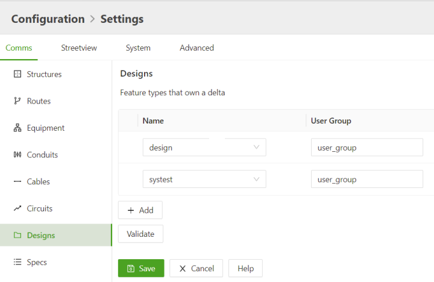
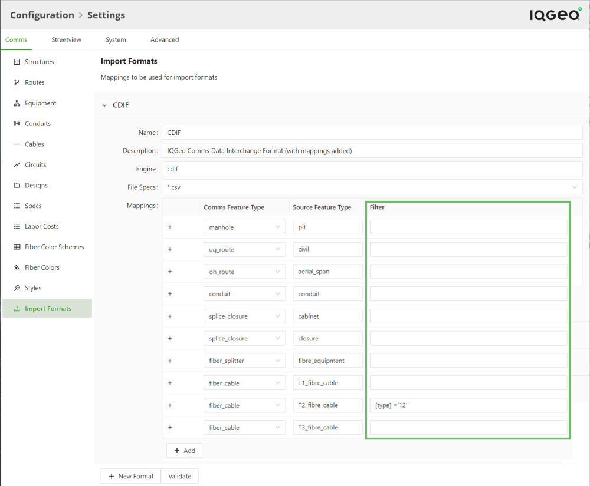

On the Comms tab page you can:
The Designs section contains a list of any feature that has been designated as a design. Designs constitute a delta compared to the master database.
The User Group field is used for managing user groups. The user group of a design allows to determine who has access to the design. You can find more details in the User Guide > Working with designs.

Figure: Configuration > Settings > Designs item > User Group field
The Import Formats section is to configure the data formats that are supported for importing data and, if needed, to establish how Source Feature Types must be mapped to Network Manager Comms Feature Types.
The Filter column provides an optional filter expression for selecting specific records among the source features. The notation format is the same as for feature filters described in: Platform Installation and Configuration Guide > Configuration > Using the Configuration Pages > Defining Platform Features > Defining Additional Properties > Filter Expressions.

Figure: Configuration > Settings > Import Formats section
Once you have added and saved an entry in the Filter column, it is added to the mywcom.import_config.<source> setting in the Settings > Advanced tab.
Topics in this section include: